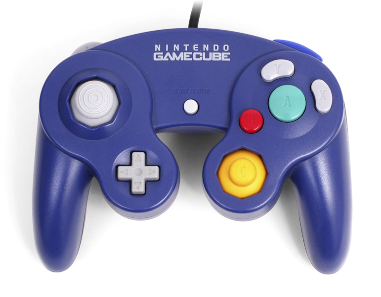
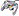
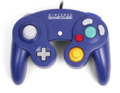

File:GameCube controller.png
Jump to navigation
Jump to search


{kind=link}
Size of this preview: 771 × 600 pixels. Other resolutions: 309 × 240 pixels | 617 × 480 pixels | 988 × 768 pixels | 1,280 × 996 pixels | 1,800 × 1,400 pixels.
{kind=link}
{kind=link}
{kind=link}
{kind=link}
{kind=link}
Original file (1,800 × 1,400 pixels, file size: 2.2 MB, MIME type: image/png)
Captions
Add a one-line explanation of what this file represents
Captions
| Description |
English: Standard indigo Nintendo GameCube controller.
Deutsch: Indigo Standard-Controller für der Nintendo GameCube Spielkonsole. |
| Date | (UTC) |
| Source | |
| Author |
|
| This is a retouched picture, which means that it has been digitally altered from its original version. Modifications: Removed background. The original can be viewed here: Gamecube-controller.jpg: . Modifications made by Alphathon.
|
|
This file is licensed under the Creative Commons Attribution-Share Alike 3.0 Unported license. | |
|
Original upload log[edit]
{kind=link}
This image is a derivative work of the following images:
- File:Gamecube-controller.jpg licensed with PD-self
- 2010-08-29T17:35:48Z Evan-amos 1800x1400 (360346 Bytes) {{Information |Description={{en|1=The standard controller for the Nintendo Gamecube, in purple.}} |Source={{own}} |Author=[[User:Evan-amos|Evan-amos]] |Date=2010-08-29 |Permission= |other_versions= }} [[Category:GameCube Con
Uploaded with derivativeFX
File history
Click on a date/time to view the file as it appeared at that time.
| Date/Time | Thumbnail | Dimensions | User | Comment | |
|---|---|---|---|---|---|
| current | 20:16, 8 September 2010 |  | 1,800 × 1,400 (2.2 MB) | Alphathon (talk | contribs) | {{Information |Description={{en|Standard indigo Nintendo GameCube controller.}} {{de|Indigo Standard-Controller für der Nintendo GameCube Spielkonsole.}} |Source=*File:Gamecube-controller.jpg |
You cannot overwrite this file.
File usage on Commons
The following page uses this file:
File usage on other wikis
The following other wikis use this file:
- Usage on de.wikipedia.org
- Usage on en.wikipedia.org
- Usage on it.wikipedia.org
- Usage on pt.wikipedia.org
- Usage on ru.wikipedia.org
- Usage on simple.wikipedia.org
- Usage on www.wikidata.org
{kind=link}